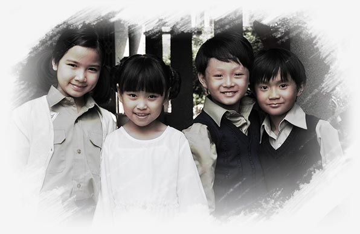

故事緣起
一段發生在保守的時代，想愛卻無法愛的故事。
兩個失去至愛，必須相濡以沫、共組家庭的女人；
雖然她們沒有丈夫，但卻擁有彼此。
四個父母迥異，卻生活在同一個屋簷下的兄弟姊妹；
雖然他們沒有爸爸，但卻有兩個媽媽。
他們用歡笑與淚水相互扶持，
用愛與關懷共譜出他們溫馨感人的生命樂章。
兩個失去至愛，必須相濡以沫、共組家庭的女人；
雖然她們沒有丈夫，但卻擁有彼此。
四個父母迥異，卻生活在同一個屋簷下的兄弟姊妹；
雖然他們沒有爸爸，但卻有兩個媽媽。
他們用歡笑與淚水相互扶持，
用愛與關懷共譜出他們溫馨感人的生命樂章。

楔子
春花，一個平凡、渴望愛情的女人。在那個混亂的時代，遇見了讓她深愛一生的男人文輝；若不是為了愛，春花也不會與另一個女人秋月，恩恩怨怨地糾纏了一世；當然更不會有她們的四個孩子。
命運終歸是命運！春花與秋月兩個女人的故事，即使到了數十年後的今天，談起這段回憶，仍會讓人忍不住深深嘆息…
孩提時，秋月是南北貨行老闆的千金小姐，春花則是被人輕易轉賣的無依孤女，春花在茶室救了被綁架的秋月，兩人匆匆一別，沒想到此生仍有交集。
成年後，春花成了在市場上擺攤賣豬肉的小販。在文輝返家的火車上，與春花偶然的邂逅，讓他不顧與秋月的婚姻愛上了春花，造成了他們三人，糾纏一生的命運…
命運終歸是命運！春花與秋月兩個女人的故事，即使到了數十年後的今天，談起這段回憶，仍會讓人忍不住深深嘆息…
孩提時，秋月是南北貨行老闆的千金小姐，春花則是被人輕易轉賣的無依孤女，春花在茶室救了被綁架的秋月，兩人匆匆一別，沒想到此生仍有交集。
成年後，春花成了在市場上擺攤賣豬肉的小販。在文輝返家的火車上，與春花偶然的邂逅，讓他不顧與秋月的婚姻愛上了春花，造成了他們三人，糾纏一生的命運…
有愛，家永遠都在
十幾、二十年的人事離散、風雨飄搖，因著春花和秋月這兩位堅毅勇敢的女人，即使人亡都不讓家破。
孩子們的父母各自尋來，逐一出現，不盡然是喜，不盡然是憂，春花和秋月憑靠著對孩子們的愛，對文輝的承諾，彼此扶持、相互合作，總是能安然度過一關又一關。
因為有愛，家永遠都在……
孩子們的父母各自尋來，逐一出現，不盡然是喜，不盡然是憂，春花和秋月憑靠著對孩子們的愛，對文輝的承諾，彼此扶持、相互合作，總是能安然度過一關又一關。
因為有愛，家永遠都在……